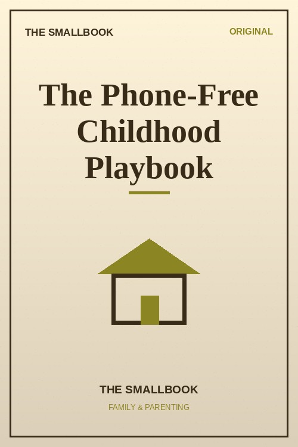

Library › Family & Parenting
The Phone-Free Childhood Playbook - Summary & Key Lessons

A TSB Original for parents who want to give their child a childhood the algorithm did not design.
📖 OPEN THE FULL INTERACTIVE BREAKDOWN →🌐 Read it in Hindi, Hinglish, Gujarati, Tamil & 22 more languages, with audio.
💡 The Big Idea
Written for parents negotiating the smartphone years, this TSB Original refuses both panic and surrender. It lays out the developmental stakes plainly, sleep, attention, friendship and independence, then gives a staged plan: delay by default with a family constitution, substitute real world freedom for screen freedom, coordinate with other parents so no child is exiled alone, and model the behaviour because children copy the phone in your hand, not the rules in your mouth.
🧠 The 8 Key Lessons
Lesson 1: What the Phone Actually Replaces
One: The Real Ledger
The playbook begins with accounting rather than alarm. Every hour of feed displaces something specific: sleep first, then unstructured play, then face to face friendship, then boredom, the mind's compost. Parents who see the ledger stop arguing about the device and start defending the four assets. The chapter summarises the research without hysteria: the harms concentrate in heavy, passive, night time and socially comparative use, which is good news, because those are precisely the patterns a household can redesign.
📖 Example: A family in our interviews tracked one week honestly: the phone's biggest theft was not homework time but the hour before sleep and the Saturday morning that used to be roaming. They moved charging out of bedrooms and reclaimed both without a single argument about apps. Read the full example →
⚡ Do this: Run the ledger for your child this week: what did the screen hours come out of? Defend the most valuable displaced thing first.
Lesson 2: Delay Is a Team Sport
Two: The Constitution and the Pact
The lone delaying family makes its child a exile; the coordinated street makes delay a norm. This chapter gives the scripts: the parent group chat, the school gate conversation, the shared pledge on first phones and social accounts, and the family constitution that puts the rules in writing before the birthday that triggers the begging. Children accept collective fairness with a grace they never extend to being uniquely deprived, so the parent's first job is diplomacy with other parents.
📖 Example: One class of eleven year olds went from three phone owners to a signed pact of twenty families within a term, after two mothers hosted a single evening with the research printed out. The children, consulted, mostly voted for the pact themselves: nobody wanted to be first, whatever they said at home. Read the full example →
⚡ Do this: Start the pact conversation this month: one message to your child's five closest friends' parents proposing shared timing. Expect relief, not resistance.
Lesson 3: Outbid, Don't Just Forbid
Three: The Substitute Curriculum
Rules without substitutes collapse by half term. The playbook's third move is a deliberate curriculum of real world freedoms scaled by age: roaming range, errands with real responsibility, a sport or craft with visible mastery, work that earns, and unstructured time with other children and no adults stage managing. Each freedom is the phone's competitor in the only currency that matters to a child: status, novelty and autonomy. Parents are coached to sell the substitutes as upgrades, not consolations.
📖 Example: A father traded his daughter's requested phone at twelve for a bank card, a bicycle with a doubled roaming range, and a Saturday job helping at a stable. She negotiated hard, then forgot the phone for a year. The autonomy she actually wanted had been delivered in a better currency. Read the full example →
⚡ Do this: List three freedoms your child can win this year that are not screens. Offer the first this week, ceremonially.
Lesson 4: The Parents' Phones Are the Loudest Lesson
Four: Modelling and the Household System
Every study the playbook cites lands on the same awkward fact: parental screen habits predict child habits better than parental rules. The chapter therefore designs the household system rather than the child's compliance: charging stations outside bedrooms for everyone, phone free meals with the basket visible, notification audits for the adults first, and the parent narrating their own struggles honestly. Children forgive hypocrisy slowly and imitate systems immediately, so the system is the sermon.
📖 Example: A mother installed the charging basket for the family's phones including her own, and reported the first week as personally brutal and domestically miraculous: dinner doubled in length, and her son began reporting his day because nobody's face was lit from below. Her own sleep score, she notes, was the family's best data. Read the full example →
⚡ Do this: Install the charging basket tonight for every phone in the house, yours first. Announce it as a family upgrade, not a child punishment.
Lesson 5: When the Phone Arrives: The Graduation Plan
Five: First Phone, Done Properly
Delay ends; the playbook's final chapter stages the arrival like a licence: a basic device before a smart one where possible, accounts introduced one at a time with the parent as co pilot, the constitution revisited and signed by the new owner, and scheduled reviews that shrink as trust compounds. Breaches are handled as driving instructors handle them, calmly, with retraining rather than theatre, because the goal is a competent adult user at eighteen, not a surveilled child at thirteen.
📖 Example: One family issues what they call the phone licence: three stages printed on the fridge, each unlocking apps and hours after a month of clean driving. Their son polices himself to earn stage two, and tells his friends, with pride, that his parents run a licensing authority. Structure, worn lightly, became status. Read the full example →
⚡ Do this: Draft your graduation plan now, before the device: stages, unlocks, reviews. Show it to your child at the next phone negotiation.
Lesson 6: The School Gate Economy: Why Collective Delay Works
The Graduation Plan
One family delaying alone pays the full social cost; fifty families delaying together pay almost none, because the child's social world exists offline for everyone simultaneously. The handbook's practical core is organising the pledge at school level: a cohort agreement, phones after a shared age, basic devices permitted for safety, reviewed yearly. The politics are local and winnable, and the evidence from schools that have done it is that the catastrophic predictions, exclusion, rebellion, arrive mostly in the speeches beforehand.
📖 Example: The parent pledges that worked shared three features the failures lacked: a named start date, a basic phone carve out so safety arguments died early, and a public list so no family had to trust rumours that others were holding the line. Read the full example →
⚡ Do this: Raise the pledge with two other families this month, aiming at a cohort, not a conversion. Offer the basic phone carve out before anyone asks for it.
Lesson 7: What Replaces the Phone Must Be Better Lit
The Graduation Plan
Removal fails when the replacement is a lecture. The phone colonised boredom, friendship, status and risk; the substitutes must serve the same hungers in daylight: roaming range that grows with competence, dens and pitches and kitchens where children are sovereign, work that pays, teams that need them. Parents underestimate how much of the phone is simply the only unsupervised territory on offer. Extend the territory and watch the device's empire shrink to its genuinely useful provinces.
📖 Example: The neighbourhoods in the handbook's files that cut teen screen hours most were not the strictest; they were the ones with a floodlit court, a tolerant shopkeeper and a bus route children were allowed to use alone. Geography did what confiscation could not. Read the full example →
⚡ Do this: Extend one real territory this month: a route, a pitch, a project with genuine stakes. Measure the phone's hours afterward rather than announcing the policy.
Lesson 8: The Repair Protocol for When It Goes Wrong Online
The Graduation Plan
Something will eventually go wrong: a cruel group chat, an image shared, a stranger's message. The handbook's protocol is rehearsed before it is needed, because a child who expects confiscation and shame will hide the incident until it is unfixable. Amnesty for reporting, screens reviewed together, schools and platforms engaged with the evidence preserved, and the child treated as the incident's first victim even when they were also a participant. Trust is the monitoring system; everything else is forensics after the fire.
📖 Example: The families who learned of incidents within hours shared one feature: a declared amnesty, repeated at calm dinners, that reporting would never cost the child their device or dignity. The others learned at the school's timetable, which is to say at the incident's maximum size. Read the full example →
⚡ Do this: Declare the amnesty at a calm dinner this week: whatever you show me, you keep your dignity and we fix it together. Mean it before you need it believed.
✅ 5-Step Action Plan
- Run the displacement ledger for one week; defend the best thing first.
- Start the parents' pact with one message this month.
- Offer one real world freedom this week, ceremonially.
- Install the whole family charging basket tonight, yours included.
- Do your own notification audit before your child's.
- Draft the phone graduation plan before any device arrives.
- Schedule the first constitution review in ninety days.
⚠️ When This Doesn't Work
A TSB Original synthesising current developmental research and family practice. Every child's needs differ, including medical, safety and neurodivergent contexts where devices serve real needs; adapt the playbook, do not worship it.
💀 The Graveyard Proves It
💬 Best Quotes from The Phone-Free Childhood Playbook
- “Do not fight the phone. Outbid it.”
- “Boredom is not the enemy. Boredom is the doorway.”
- “Your child will remember the roaming, not the feed.”
Interactive version: mark lessons as read, listen in your language, share quote cards.